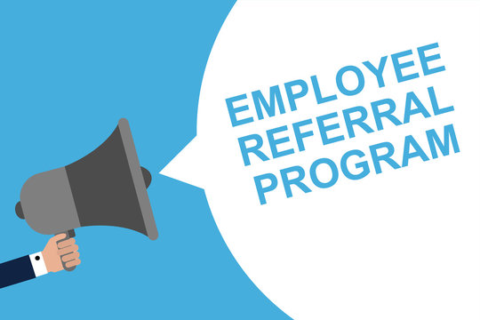

Your Future Is Here
From recent graduates, experienced professionals, and former military, the A.I.S., Inc. team might just be what you are looking for.
STUDENTS & RECENT GRADUATES
Continuing to build and grow the pipeline of future scientific leaders, high-potential employees,
and subject matter experts is critical to our success. From hands-on entry level positions
like our observer programs to post-doctoral research associates, put your learning to work.
Search our opportunities
Find us on campus, we look forward to meeting you and discovering your ambitions.
Check our schedule of upcoming college and university events.
 EXPERIENCED PROFESSIONALS
EXPERIENCED PROFESSIONALS
As a growing scientific services firm, experience is a must. Working at A.I.S., Inc, you will have the
opportunity to work on advanced technologies in a culture focused on continuous improvement, where creativity and innovation is valued.
Search our opportunities
So bring your expertise and join our team!
 TRANSITIONING MILITARY
TRANSITIONING MILITARY
We want you to advance your career beyond your active service. The knowledge and experience of our veterans and reservists
have helped shape A.I.S., Inc. into the agile small business we are today! If you are ready for us to translate your military skills
and experience into a new way to serve,
Search our opportunities
Career Development
By investing in our people, we invest in our future.
At A.I.S., Inc., taking care of our people is a top priority. We develop our talent by offering programs and activities to support career growth, professional development, and skill enhancement.
Some of our internal and external programs, workshops, and initiatives include:
- Management Development
- Mentorship Program
- Coaching Skill Development
- Career Agility
- On-the-Job Skill-Based Training
- Suite of Professional & Personal Development Tools
- Web-Based Training
Diversity, Equity, and Inclusion

Our employees represent a diverse workforce with varied backgrounds, perspectives, and experiences.
At A.I.S., Inc., we believe that a diverse and inclusive environment makes us a stronger company. We embrace different points of view, respect one another in the workplace, and understand that an inclusive environment furthers creativity, innovation, and business performance.
A.I.S., Inc., is committed to building a diverse and inclusive workplace where everyone feels valued. We are committed to building a workplace where equal employment opportunities are available to all applicants and employees without regard to race, color, religion, sex, sexual orientation, gender identity, national origin, disability status, protected veteran status, or any other characteristic protected by applicable law.
Sustainability
We demonstrate an ongoing commitment to sustainability where we support environmental, social and governance programs, and engage our
people in the communities we serve.
At A.I.S., Inc., we focus on social programs of diversity, work-life balance, and health and safety improvement. We support corporate
citizenship, ethics and human rights, and our environment.
Additional Information
Equal Opportunity Employer
It is the policy of A.I.S. to recruit, hire, train, promote, transfer and compensate our employees and provide all
other conditions of employment including Company sponsored events without regard to race, color, creed, religion, national origin, age, sex, gender identity,
genetic information, marital status, lawful alien status, sexual orientation, physical or mental disability, citizenship status, veteran status or any other status
protected by applicable law.
E-Verify
A.I.S., Inc. participates in the United States Department of Homeland Security's E-Verify program. Under this program, A.I.S., Inc. will provide to the
Social Security Administration and, if necessary, the Department of Homeland Security, information from each employee's Form I-9 to confirm work authorization.
Registered User
Please note: For registered users, please continue to use your existing username.
If you are not a registered user, please enter an email address to create an account.
Login
Recruiting Scam Advisory!
Be aware of ongoing Internet scams where scammers pose as a company recruiter to trick job seekers into proving their banking information or other personal information. Do not become a victim of these scams!
For job seekers applying to A.I.S., Inc., you can be assured of the following:
- All AIS recruiters use an @aisobservers.com email address for all email communications with job seekers
- All AIS recruiter email addresses include a digital signature to assure authenticity.
- An AIS recruiter will NEVER request banking information from a job seeker
- AIS will NEVER extend a job offer without first conducting a formal interview
Contact
If you are having technical issues applying for a position on our career site or need special assistance or an accommodation to apply for a posted position, contact our Talent Acquisition department via email at talentacquisitionteam@aisobservers.com
For all other inquiries or questions, please use our general contact form.
Video
Why work at A.I.S., Inc?
Here's Why. Fishing dates back hundreds of years. Today, commercial fishing is possible due to cooperation between the fishing industry and fisheries scientists like you. Marine Biologists provide data that allows NOAA to conduct in-season management of fisheries,
stock assessments, and ecosystem studies. This regional, scientific monitoring supports ten national standards of sustainability required by the Magnuson-Stevens Fishery Conservation and Management Act, which helps preserve future generations of fish and fishing communities. Commit to the journey!
Fishery Observation FAQs
Benefits & Wellness
When we think of benefits and wellness, we think about our employees and their families.
We offer a variety of benefits, including medical, dental, vision, life, disability, and 401(k) retirement plan.
We champion our wellness programs that focus on you and your family’s physical, emotional, and financial well-being.
Work-Life Balance
We understand there is more to life than work.
That’s why we believe it is important to offer such programs
like our flexible work schedule, competitive vacation
and sick leave, and parental leave.
Internal Referral Award Program
Get Paid For Referring High Quality Candidates!

The Internal Referral Award Program offers a one-time referral payment
to current A.I.S., Inc. staff members, to help A.I.S., Inc. attract, hire and retain the very best talent.
Learn More
Upcoming Recruiting Events
Coastal Carolina - Career Fair
September 6, 2023
Conway, SC
Stockton University
October 15, 2023
Galloway, NJ
Texas A&M
November 2, 2023
Galveston, TX